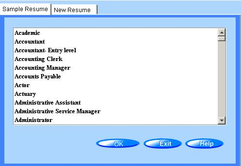

Creating a Resume
To Create a New Resume
From the Main Menu, click the
button or the icon on the toolbar.
You are presented with the Open Resume dialog box and have the option to create a New resume, view Sample resumes, or open a previously Saved resume.

From the New tab, select a resume type and click OK.